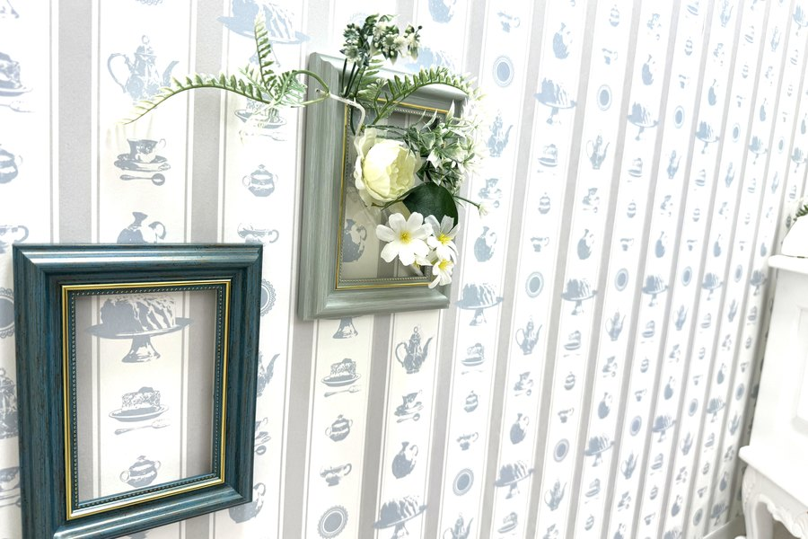
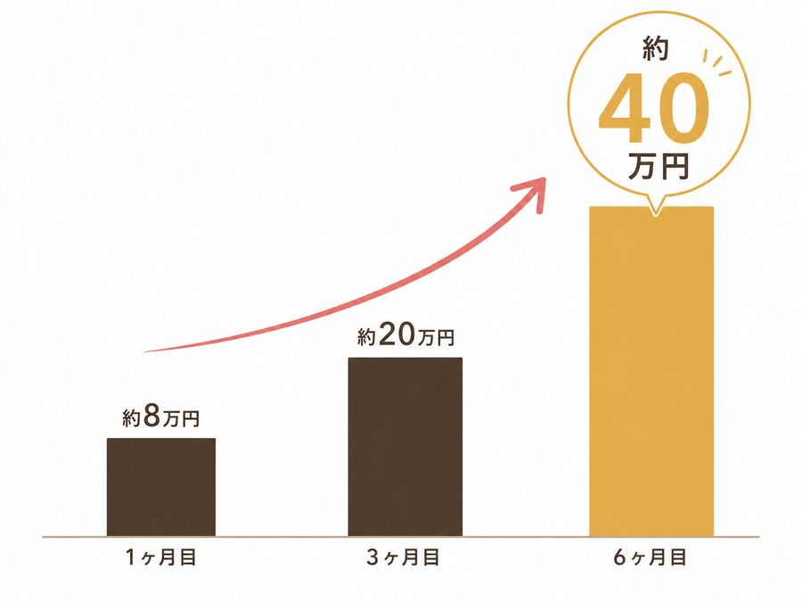
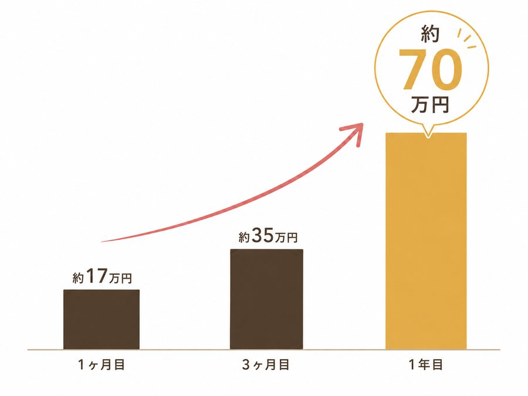
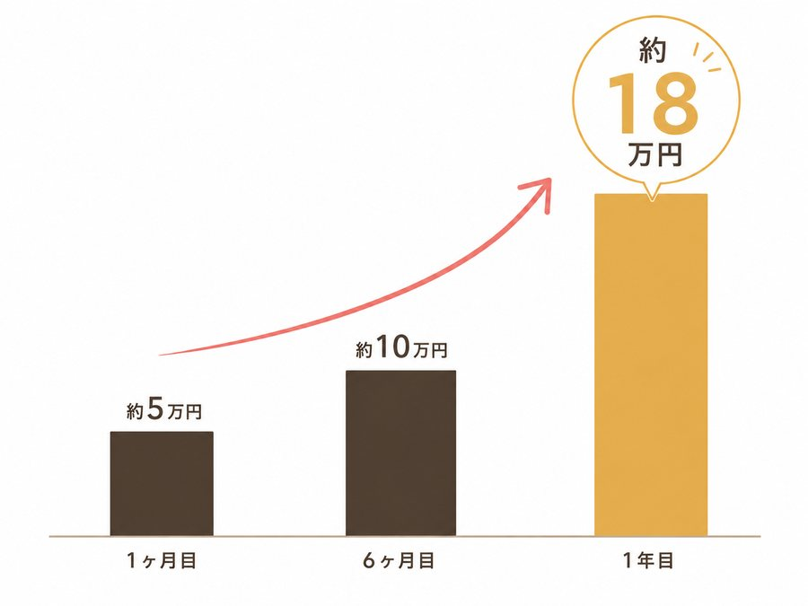

仕組みと、リアルな数字をお伝えします。
※2026年8月調査
リモ活の報酬は、お客さまがあなたと過ごした"時間"で発生します。
だから脱ぐ必要はなく、「また話したい」と思ってもらえる子が伸びる仕組み。
つまり、
報酬のカギは、常連さんの数です。
だから、始めたばかりの頃と、常連さんができた後で、時給は変わります。ここを隠さず書きます――
条件で縛るより、生活に合わせて選べるようにしています。だから、次のモデルケースも、週1日の子から週5日の子までいろいろです。
週1日・1日2時間からOK。テスト前は減らす、余裕のある月は増やす、何度変えてもいい。
「今月あと◯日出て」とは言いません。
本業・学業・他のバイトと両立している子がほとんどです。
在宅も扱えますが、こもれびは通勤をお勧めしています。理由は、そばでしっかり教えたいから。慣れてきた子には在宅の相談にも乗ります。
※2026年8月調査段階
あやさんの場合｜週3日・1回4〜5時間

まだ常連さんがいない時期。ここが一番がんばりどきです
常連さんが数人。待機時間が減ってくる
「いつもの人と、いつものおはなし」で安定
ももかさんの場合｜週5日・1回5時間

伸び悩んでいましたが、たくさん入る分、お話のコツを早くつかめました
イベントも積極的に行って楽しさがわかってきた
一気に伸びた日はランキング上位に入ることも
りこさんの場合｜週1日・1回4〜6時間

週末の余裕がある日に
週末に固定で入る分、固定のお客さんがつきやすい
自分のペースでコツコツ積み重ねました
無理にシフトを増やすんじゃなくて、無理ないペースで最大限。
最初は報酬が小さくても、私たちと一緒に続けていけば自分のペースでしっかりお客さんを掴めます。きちんとコツを掴めば、目標だって達成できます。
正直に：日々は、波があります
上の数字は、月単位でならした金額です。リモ活は歩合制なので、同じ子でも日によって差が出ます。1日で4万円伸びた日の次が、8,000円だった――そんなことも普通にあります。
でも、常連さんが増えるほど、この波は小さくなっていきます。
日払いは働いたその日にお渡し。好きなタイミングで清算ができます。
こもれびカフェでは専任の税理士さんがいるから安心です。
ただし、税金・確定申告・扶養のことは、あなたの状況（学生か、本業があるか、扶養内か）で正解が変わります。
一律の説明で誤解させたくないので、面接のときに、あなたのケースでご案内します。